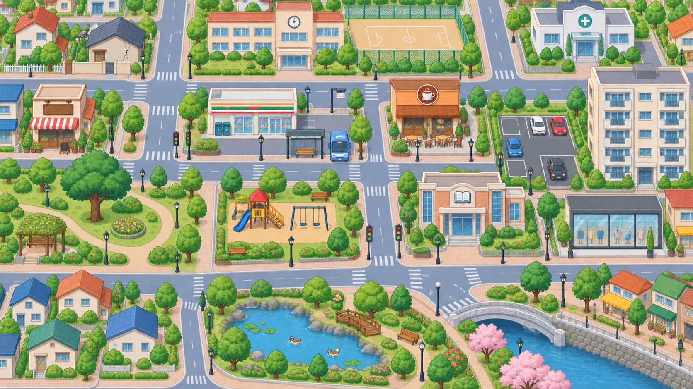

2단계 · 위험 찾기
위험한 곳에 스티커를 붙이세요.
1단계에서 본 위험 상황을 떠올리며 마을 안의 네 장소를 찾아보세요.
0 / 4찾은 위험 지역
방법 · 아래의 위험 스티커를 끌어서 위험한 장소 위에 놓으세요. 스티커를 먼저 누른 뒤 장소를 누르는 방법도 가능합니다.

스티커 보관함 · 4장
카드를 하나씩 끌거나, 카드와 장소를 차례로 누르세요.
안전 표지판을 모두 붙였어요! 이제 “나무가 쓰러질 수 있어요. 조심하세요.”처럼 각 장소를 설명해 보세요.
3단계 시작하기
3단계 시작하기